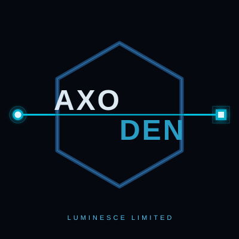

Programme and transformation advisory
Support for sponsors and delivery teams on complex technology programmes, including operating model, governance, dependency mapping, delivery risk and recovery planning.
Luminesce Limited · Guildford, UK · founded 2023
Luminesce Limited is an independent UK consultancy led by Erkan Yalcinkaya. It helps senior teams shape, review and deliver complex technology programmes across AI assurance, data migration, integration, carve-outs and regulated enterprise change.
AxoDen is the company's AI assurance and evidence systems work. It supports consulting engagements where AI-enabled systems need clearer controls, audit evidence, decision records and governance before they are piloted, procured or scaled.
Luminesce can be engaged as an independent adviser, reviewer or hands-on delivery support where technology decisions carry commercial, regulatory or operational consequences.
Support for sponsors and delivery teams on complex technology programmes, including operating model, governance, dependency mapping, delivery risk and recovery planning.
Advisory and delivery input for due diligence, Day-1 readiness, separation planning, cutover governance and multi-vendor execution.
Practical architecture and control design for legacy estates, regulated data movement, system retirement, cloud governance and audit-facing evidence.
Independent review of AI use cases, vendor claims, evidence flow, human oversight, auditability and readiness for pilot, procurement or scale-up.
Luminesce Limited is a UK company founded by Erkan Yalcinkaya, an engineering physicist and systems architect with 25 years of experience building regulated enterprise, data, integration and transformation systems.
The first pillar is consulting and advisory: programme leadership, architecture, migration, integration, carve-out and vendor-control work in regulated or operationally complex environments. The second is AxoDen: AI assurance, evidence architecture and control design for systems that must be trusted, explained, refused or replayed.
The two pillars converge in regulated transformation programmes preparing to deploy AI into operational, data, compliance or decision workflows. That is where Luminesce can review both the AI-control question and the delivery environment around it.
AxoDen is Luminesce's main technical product and research line: a compositional AI control and evidence framework grounded in topology, graph theory, information physics and formal methods.
AxoDen addresses three unresolved problems in high-stakes AI: trust, explainability and autonomy under contested conditions. Current application surfaces are cyber-forensic intelligence, RF systems and AI integration, and cyber-physical grid integrity. AxoDen also drives automated pre-audit and compliance diagnostics for GxP/pharma and aerospace supplier dossiers.
The enterprise advisory work draws on delivery experience across pharmaceuticals and life sciences, telecommunications, financial services, consumer goods and large-scale enterprise change.
The service areas below combine consulting/advisory work and AxoDen-led assurance. They can be scoped as short reviews, executive briefings, pilots or embedded delivery support.
A bridge engagement for regulated transformation programmes preparing to introduce AI into operational, data, compliance or decision workflows.
Design or review AI-enabled systems where evidence capture, refusal behaviour, control boundaries, replayability and certification readiness matter.
Turn fragmented SOC, incident or technical evidence into inspectable investigation structures.
Automated pre-audit and compliance diagnostics for regulated supplier dossiers, with GxP/pharma and aerospace supplier assurance as the first named wedges.
Assess systems where RF, GNSS or sensor evidence is converted into AI decisions, especially under jamming, spoofing or contested signal conditions.
Apply evidence architecture to grid, SCADA, DER, microgrid and critical-infrastructure control events.
Structured advisory for boards, sponsors and technical leaders facing complex AI, procurement, transformation or research-to-product decisions.
Typical use cases include a board deciding whether to approve an LLM-based customer-facing tool, a sponsor weighing two vendor architectures, or a research lead deciding which AxoDen capability is mature enough for pilot work.
Support complex technology programmes where integration, separation, migration, vendors, governance and business continuity have to be managed together.
Design practical architecture and data controls for regulated estates with legacy platforms, cloud migration pressure and retirement obligations.
Support boards, founders, sponsors and programme teams when technical choices, commercial commitments and delivery risk need to be made explicit.
Luminesce is built around first-principles systems thinking, delivery discipline and research translation.
Erkan Yalcinkaya has worked across pharma, telecoms, financial services and enterprise transformation, including regulated data migration, large-scale platform change, carve-out delivery and operational integration. That delivery background shapes the company position: evidence systems need to work inside real operating constraints, including governance, procurement, audit and delivery pressure.
The pattern began early: at Unilever Turkey, Erkan designed a virtual-warehouse system that reduced fleet investment and won a Unilever global best-practice award. The same operating instinct now runs through Luminesce: model the system, find the load-bearing constraint, and make the decision path inspectable.
Later work included large regulated and transformation environments, including GxP-scale data migration, a £9B M&A integration environment, a £200M transformation programme context, and carve-out/separation delivery. AxoDen extends that background into AI-era evidence, refusal and replay problems while preserving the enterprise advisory work.

AxoDen · evidence infrastructureAxoDen is the main technical product and research line inside Luminesce. It is positioned as evidence infrastructure for AI-enabled, cyber-physical and regulated decision systems.
Bounded trust infrastructure for evidence nodes, admissibility checks and replayable decision ledgers.
Refusal-capable autonomy under contested conditions. Admissibility, action permission, jam-tolerant control, audit-grade replay.
Structured reasoning over incomplete, contradictory or noisy incident evidence.
Replayable evidence records for cyber-physical grid events and resilience review.
Work can begin through a discovery engagement or a delivery engagement, depending on whether the buyer needs a decision, a pilot, or hands-on execution.
Lower-commitment entry points for buyers who need clarity before committing to a pilot or programme role.
Short bridge engagement for transformation teams, CIO/CTO sponsors, compliance leaders or vendors preparing to deploy AI in a regulated or operationally sensitive context.
Fast review of a system, dossier, architecture or decision process with a short findings pack.
Closed-room briefing for boards, sponsors or senior teams on AI risk, evidence architecture, refusal behaviour and operational assurance choices.
Execution-shaped work for buyers who already have a defined problem, active programme or decision deadline.
Focused proof of value using a defined corpus, evidence schema and success criteria.
Hands-on architecture, delivery and assurance support inside a programme team.
Structured commercial, investor, academic or procurement response where the argument has to hold.
Many Luminesce engagements involve sensitive technical, commercial, regulated or security-relevant evidence. Work can begin under NDA, with engagement data kept to the agreed working environment and access model for the pilot or review.
Pilot closeout should state what was received, what was produced, what must be returned or deleted, and which claims remain dependent on source review, integration testing or external validation. Luminesce is willing to work under source-review and controlled-data conditions when procurement, regulated or safety-critical use requires it.
The best starting point is a concrete problem: an AI system that needs assurance, a supplier dossier that needs pre-audit diagnostics, a forensic workflow that needs structure, a cyber-physical event that needs replay, or a transformation programme that needs independent technical judgement.